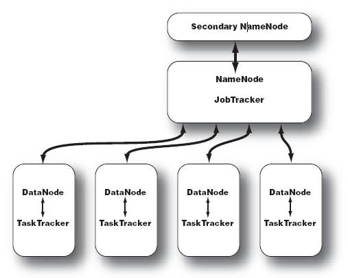
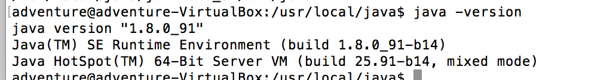
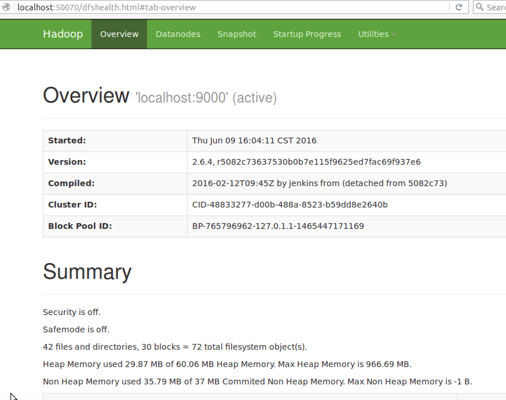
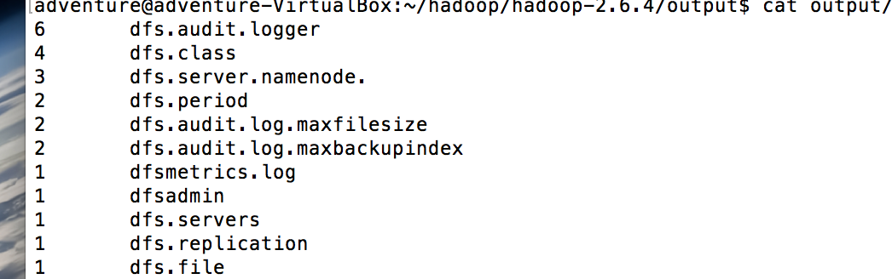
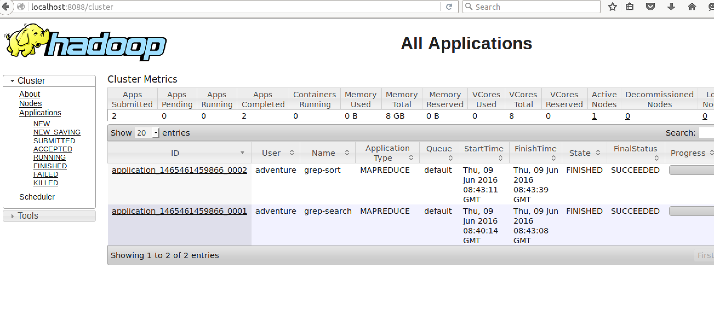
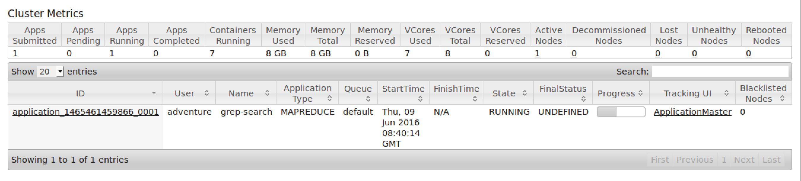
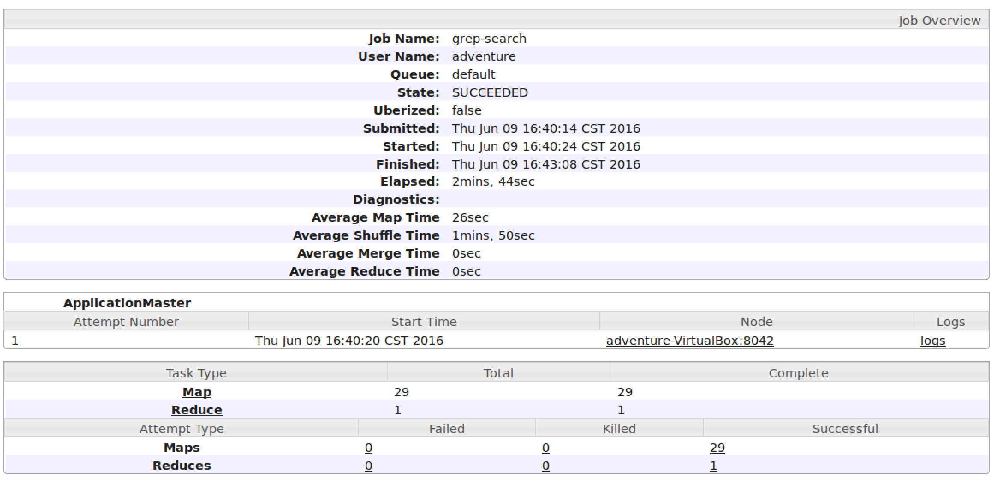
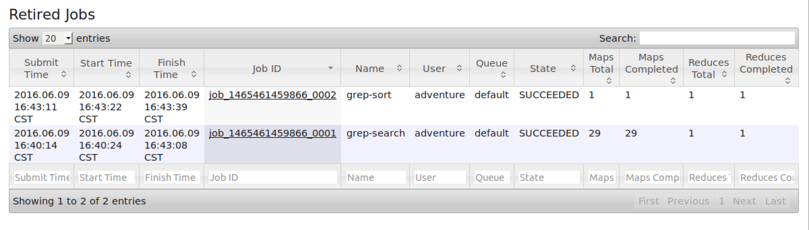

Hadoop是一个能对大量数据进行分布式处理的软件框架，本文主要介绍单机伪分布式Hadoop的配置。Hadoop最核心的设计就是：HDFS和MapReducue。HDFS提供了海量数据的存储，MapReduce提供了对数据的计算。Hadoop集群主要由NameNode，DataNode，Secondary NameNode,JobTracker,TaskTracker组成。NameNode记录了文件如何被拆分成block以及这些block都被存储到了哪些DataNode节点，同时NameNode也同时保存了文件系统运行的状态信息。DataNode中存储这些被拆分的blocks。Secondary NameNode帮助NameNode收集文件系统的运行状态信息。JobTracker负责调度多个JobTracker的运行。JobTracker负责某一个map或者reduce任务。其结构如下图所示：

上面介绍了Hadoop的一些基础知识，下面将会介绍如何配置单机的Hadoop系统。本教程的环境为64位的Ubutun 14.04，Hadoop版本为2.6.4。
一：安装Java
1 首先到oracle官网下载最新的jdk，然后解压到local目录下。
1234sudo mkdir /usr/local/javacp jdk-8u91-linux-x64.tar.gz /usr/local/javacd /usr/local/javasudo tar xvf jdk-8u91-linux-x64.tar.gz2 最后配置环境变量，这里我采用全局设置的方法
打开.bashrc文件，在文件末尾追加路径。123vim ~./bashrcexport JAVA_HOME=/usr/local/java/jdk1.8.0_91export PATH=$PATH:$JAVA_HOME/bin3 检验是否安装成功
在终端输入如下命令：1java -version成功则显示如下：

二：安装Hadoop
集群和单机模式都需要ssh登录，因此在安装Hadoop前确保系统已经安装了ssh,安装后，可以使用以下命令登录本地。
之后从Apache官网下载需要的Hadoop版本，这里我下载的是hadoop 2.6.4。解压之后进入Hadoop目录，打开etc/hadoop/hadoop-env.sh中Java的路径。
可以查看Hadoop的用法。
三：伪分布式配置
1 Hadoop的配置文件都位于etc/hadoop目录下，伪分布式需要修改两个配置文件core-site.xml和hafs-site.xml。每个配置文件都以property的name和value方式来实现。
core-site.xml的配置如下：123456<configuration><property><name>fs.defaultFS</name><value>hdfs://localhost:9000</value></property></configuration>hdfs-site.xml的配置如下：
123456<configuration><property><name>dfs.replication</name><value>1</value></property></configuration>2 修改完配置之后，格式化文件系统。
1bin/hdfs namenode -format3 启动NameNode和DataNode的守护进程。
1sbin/start-dfs.sh打开浏览器，输入http://localhost:50070/可以查看NameNode的界面。
4 创建hdfs目录
12bin/hdfs dfs -mkdir /userbin/hdfs dfs -mkdir /user/<username>5 将input中的文件拷贝到hdfs中
1bin/hafs dfs -put etc/hadoop inputinput中是要被统计单词出现次数的文本。可以把Hadoop的配置文件放入input目录中，统计单词次数。
1cp etc/hadoop/*.xml input6 运行Hadoop提供的例子
1bin/hadoop jar share/hadoop/mapreduce/hadoop-mapreduce-examples-2.6.4.jar grep input output 'dfs[a-z.]+'7 查看结果
可以将hafs中的结果拷贝到本地文件系统查看12bin/hdfs dfs -get output outputcat output /*也可以直接在hdfs上查看结果
1bin/hdfs dfs -cat output/*因为输入不一样，每个人的结果不近相同。
8 关闭守护进程
1sbin/stop-dfs.sh注意因为Hadoop只会追加文件，因此每次执行Hadoop任务都要先删除output目录，不然会报错。
1bin/hdfs dfs -rm -r output
四：启动yarn
伪分布式系统不启动yarn也可以，一般不会影响程序执行，但是为了学习这里我们也对其进行配置。上述启动Hadoop仅仅是启动了MapReduce环境，我们可以启动yarn，让yarn来负责资源的管理和任务的调度。
1 配置
首先修改配置文件mapred-site.xml，这里需要先对其重命名。1cp ./etc/hadoop/mapred-site.xml.template ./etc/hadoop/mapred-site.xml然后修改mapred-site.xml
123456<configuration><property><name>mapreduce.framework.name</name><value>yarn</value></property></configuration>修改yarn-site.xml
123456<configuration><property><name>yarn.nodemanager.aux-services</name><value>mapreduce_shuffle</value></property></configuration>2 启动ResourceManager和NodeManager守护进程。
1sbin/start-yarn.sh这时输入jps可以查看，系统多了ResourceManager和NodeManager
两个后台进程。在浏览器能够查看ResourceManager，默认情况下端口为8088，http://localhost:8088/。
3 启动历史服务器
Hadoop默认情况下没有开启历史服务器。1./sbin/mr-jobhistory-daemon.sh start historyserver这样就能在web中查看任务的运行情况。
4 关闭yarn
12./sbin/stop-yarn.sh./sbin/mr-jobhistory-daemon.sh stop historyserver

